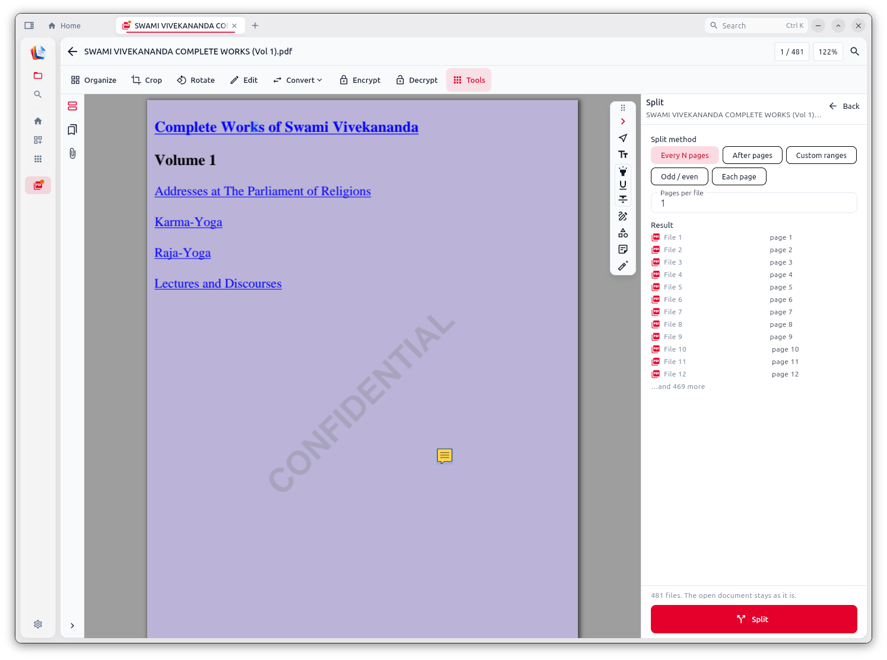
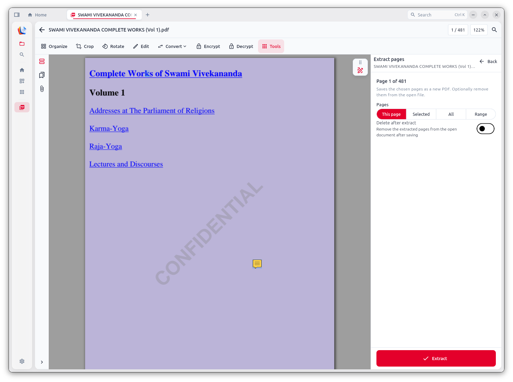
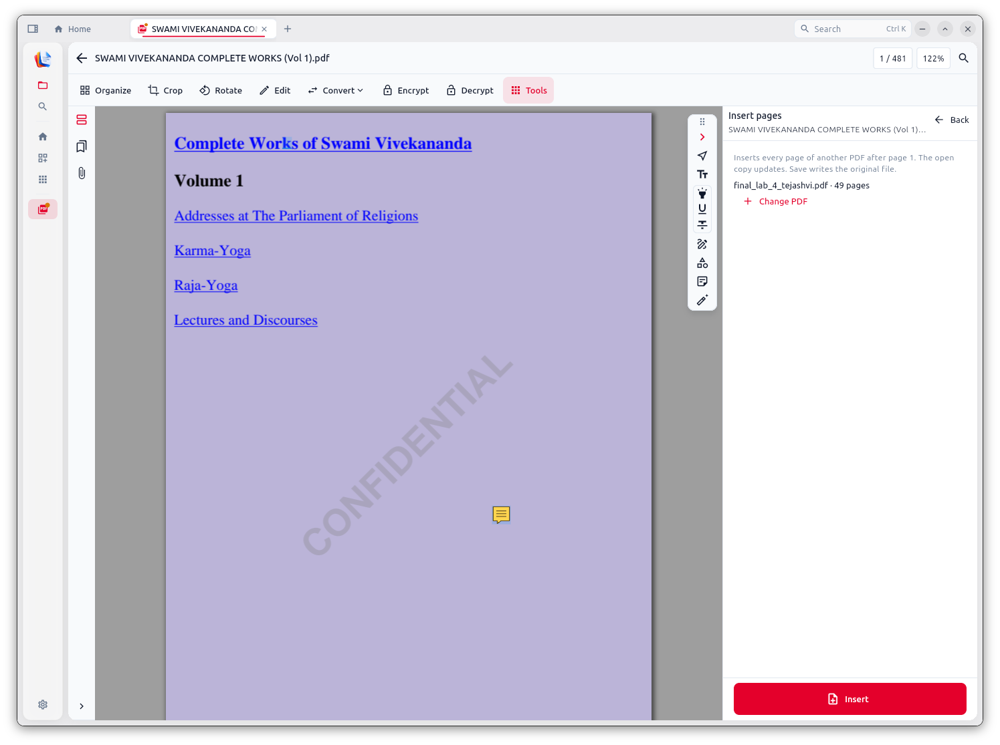
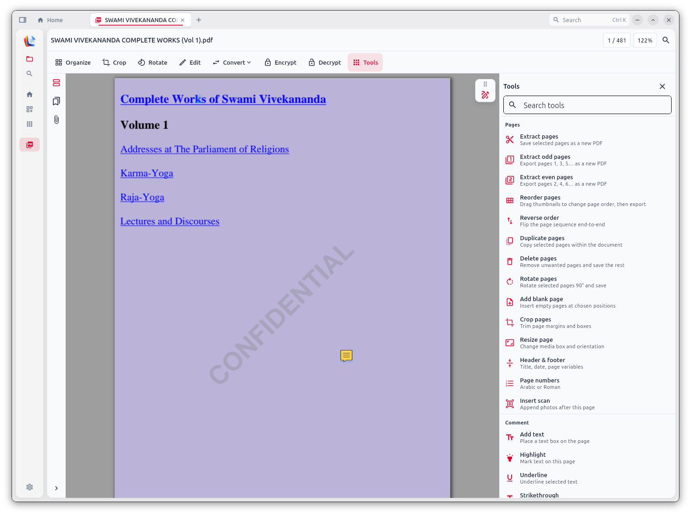
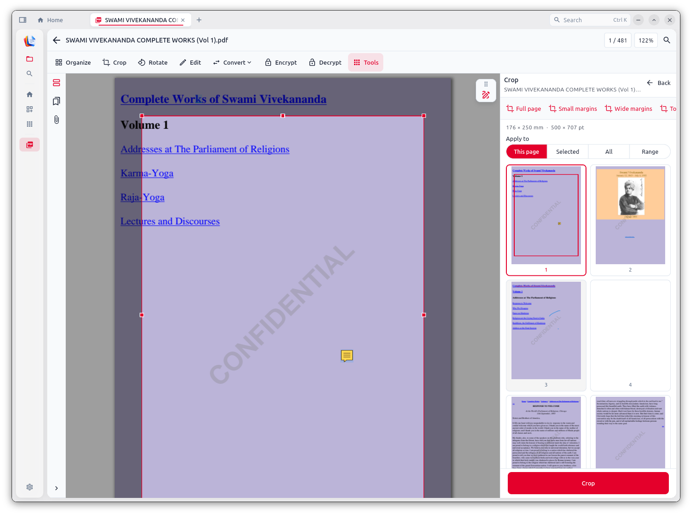
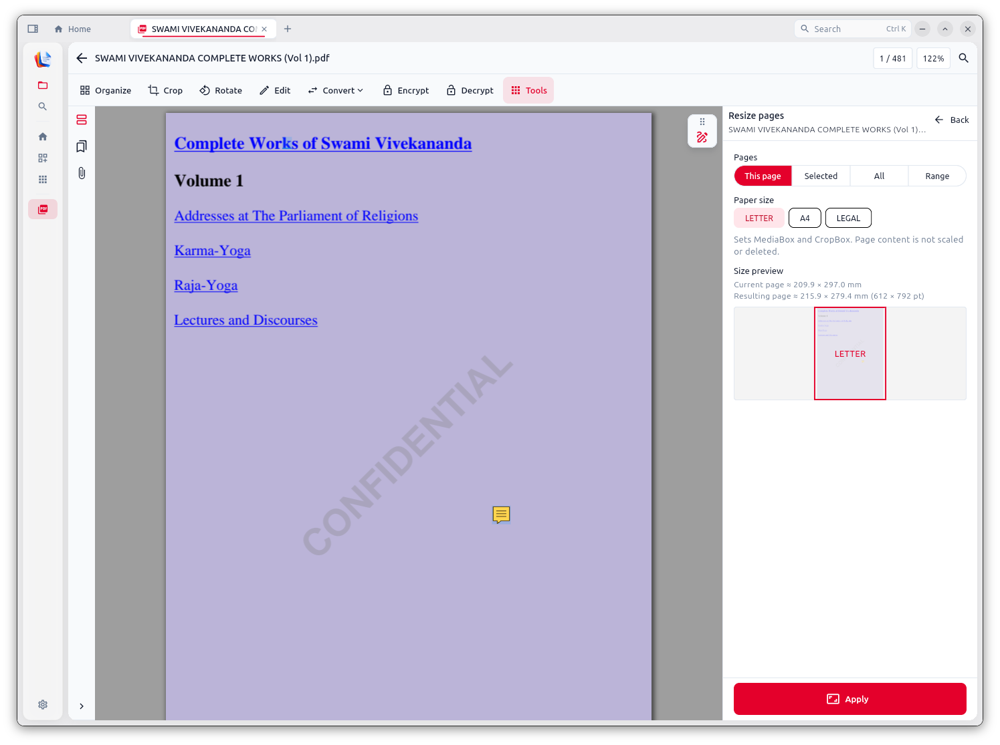
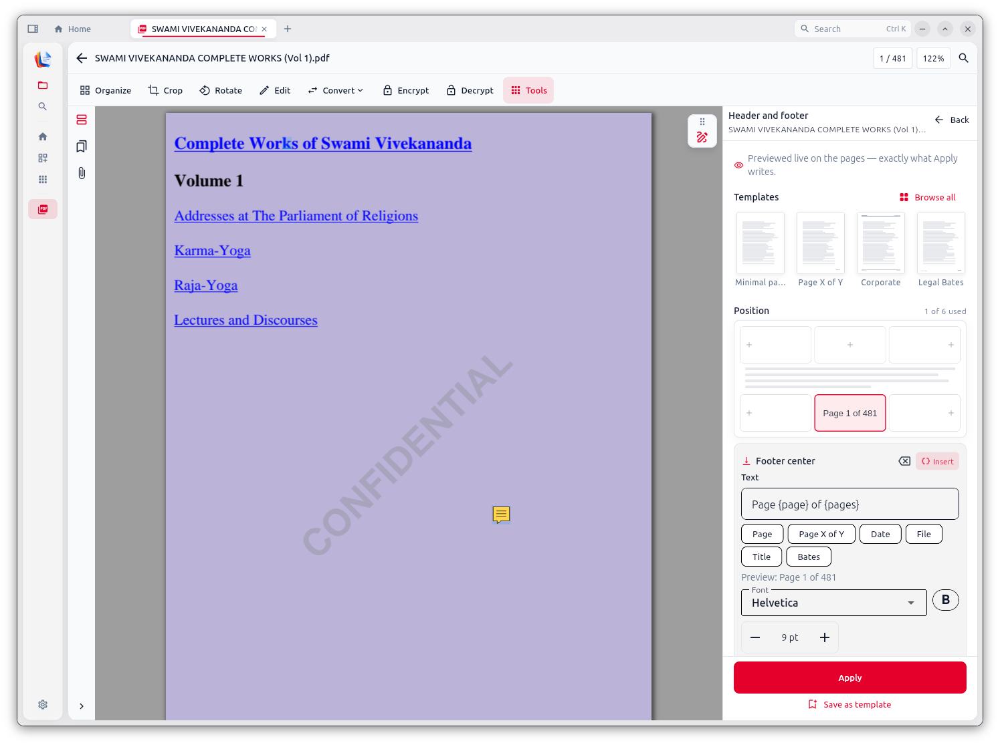
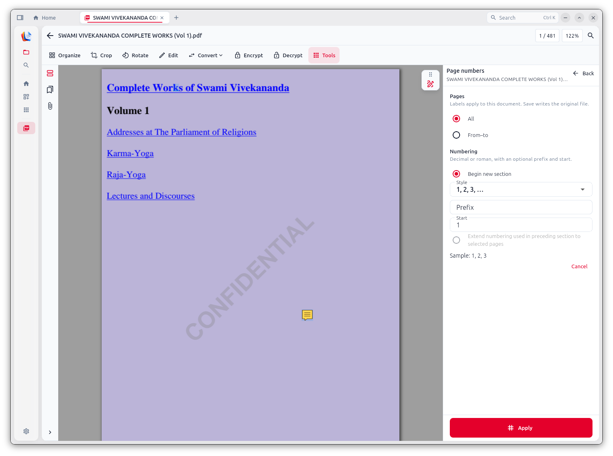
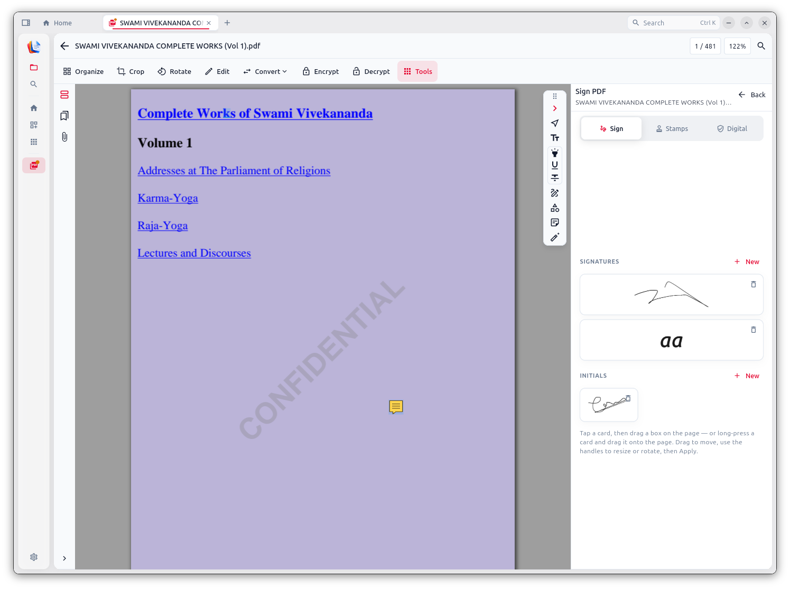
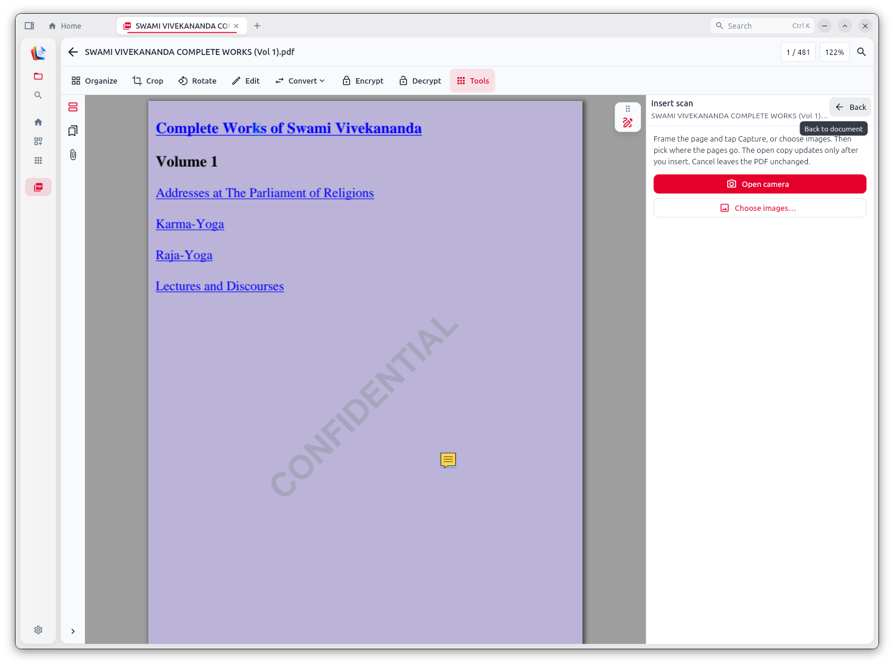

Product
How to use tools
Exact labels can vary slightly by platform, but the flow is always: open → choose tool → set options → Apply / Save. Everything below runs offline on your machine.
Start here if you are new: install once, open any PDF, then pick a tool from Home, the tools hub, or the viewer ribbon.
- Install Document Studio from Download & install.
- Open a PDF from Home, drag-and-drop, Browse, or “Open with”.
- Save exports to a folder you control.
- Keep passwords ready for encrypted PDFs — the app never cracks them.
Tip: Prefer the full Setup / DMG / .deb so engines (qpdf, Tesseract, LibreOffice) are bundled.

Jump to a tool
- Home & library
- Create & convert in
- Organize pages
- Optimize
- Protect & security
- Sign & forms
- Edit & markup
- Capture & OCR
- Export & batch
- CLI
- Troubleshooting
Home & library
Open PDF
Why: Get a file into Document Studio so every other tool can run on it — without uploading anywhere.
- Launch Document Studio.
- Click Open PDF, or drag a file onto the drop zone, or use Browse.
- On Windows after Setup.exe you can also right-click a PDF → Open with Document Studio.
- The PDF opens in the viewer; use the ribbon / Tools panel for the next action.
Tip: Encrypted PDFs ask for a password once; wrong password simply fails — nothing is brute-forced.

Pinned & recent
Why: Jump back to files you use often without hunting through folders. Pins and recents stay local only — no cloud sync.
- Open a PDF from Home.
- Click the star (pin) on the file card or in the library row.
- Pinned files stay at the top; recent files appear as you open them.
- Unpin anytime — this only changes local library state, not the PDF on disk.
Tip: Clearing recent/pins does not delete your documents from disk.
All tools / tools hub
Why: One searchable grid for every job category — faster than hunting menus when you know the tool name.
- From Home click All tools, or open the Tools panel in the viewer.
- Use the search box at the top of the grid (e.g. type “merge”, “ocr”, “encrypt”).
- Browse sections: Create, Organize, Optimize, Protect, Sign, Edit, Convert.
- Click a tool card to launch it with the current document (when required).
Tip: Same hub appears from Home and from inside an open PDF — pick whichever is closer.

Create & convert in
Create PDF (blank / from text)
Why: Start a new document when you do not already have a PDF — notes, cover pages, or a blank sheet to insert later.
- Home → Create PDF (or All tools → Create PDF).
- Choose blank page(s) or paste / type plain text.
- Confirm page size if prompted.
- Create → the new PDF opens; Save it to disk.
Tip: For rich Word layouts, prefer From Office instead of plain-text create.
Images to PDF
Why: Turn photos, phone scans, or screenshots into a single shareable PDF — still fully offline.
- Home → Images to PDF.
- Add images (multi-select). Drag rows to set page order.
- Optional: page size / fit options if shown.
- Export / Create PDF → choose the output path → open to verify.
Tip: For camera capture straight into an existing PDF, use Insert scan instead.
From Office (Word / Excel / PowerPoint → PDF)
Why: Convert Office files to PDF on your machine with the bundled LibreOffice engine — no upload, no Microsoft account.
- Desktop only: Home / All tools → From Office (Office convert).
- Pick a
.docx,.xlsx,.pptx(and related formats the dialog lists). - Wait for local conversion (first run can be slower while LibreOffice starts).
- Open the result PDF and check layout, fonts, and page breaks.
Tip: Needs the full desktop installer (engines included). Details: Office conversion.
Organize pages
Organize (reorder, rotate, duplicate, delete, reverse)
Why: Fix page order and orientation before you share — the everyday “clean this PDF up” workspace.
- Open a PDF → Organize (or Edit pages / Organize hub).
- Click thumbnails to select; drag to reorder.
- Use toolbar actions: rotate Left/Right, Duplicate, Delete, Reverse.
- Review the sequence, then Apply and Save.
Tip: For multi-file combine jobs, jump to Merge / Insert / Split from the same organize family.

Merge PDFs
Why: Combine several PDFs into one packet (course pack, application bundle, scanned chapters) without an online merge site.
- Open Merge from tools or the organize hub.
- Click + Add PDFs and stack files in the order you want.
- Drag rows to reorder sources if needed.
- Save or Save as the merged result.
Tip: Encrypted sources show a lock — unlock / enter the password before they can merge.

Split PDF
Why: Break a large PDF into smaller files for email limits, chapter handouts, or separating forms from attachments.
- Open the PDF → Split.
- Choose a mode: Every N pages · After specific pages · Custom ranges · Odd/even · Each page as its own file.
- Check the Result preview list before you commit.
- Click Split and pick an output folder. The original open document stays intact.
Tip: Custom ranges are best when chapters are uneven (e.g. 1-12, 13-40, 41-end).

Extract pages
Why: Pull out only the pages you need into a new PDF — share a subset without sending the whole file.
- Open Extract pages.
- Choose scope: This page / Selected / All / Range.
- Optional: enable Delete after extract if you want those pages removed from the source.
- Extract → save the new PDF.
Tip: Leave “Delete after extract” off unless you intend to rewrite the source document.

Extract odd / even pages
Why: Separate duplex scans or print odd/even sides — common when a scanner or printer handled sides differently.
- From Organize hub open Extract odd pages or Extract even pages.
- Confirm the source PDF is correct.
- Run extract → save the new file (pages 1,3,5… or 2,4,6…).
- Optionally merge the two results later if you were fixing duplex order.
Tip: Split’s odd/even mode is similar; use Extract odd/even when you only need one side as a new file.
Insert pages
Why: Splice another PDF’s pages into the current document (cover sheet, appendix, signed page) at an exact position.
- Open the target PDF → Insert pages.
- Choose the page after which new pages should appear.
- Pick the source PDF; every page from that file is inserted.
- Insert → review thumbnails → Save.
Tip: To swap pages instead of appending, use Replace pages.

Replace pages
Why: Swap one or more pages with pages from another PDF (wrong scan, updated form page) without rebuilding the whole file.
- Open the PDF → Replace pages (Organize hub).
- Select the page(s) in the current document to replace.
- Choose the replacement PDF and which of its pages to use.
- Confirm → Apply → Save.
Tip: Keep a copy of the original until you verify the replacement visually.
Move between documents
Why: In Workspace, move pages from one open PDF into another — useful when sorting a mixed scan pile into separate files.
- Open Workspace / dual-document view with two PDFs.
- Launch Move between documents.
- Select pages in the source document.
- Choose destination position → move → save both files.
Tip: If you only need a copy as a new file, Extract is simpler than move.
Reorder pages
Why: Dedicated reorder flow when you only need to drag thumbnails and export a new order.
- Organize hub → Reorder pages.
- Drag thumbnails into the correct sequence.
- Export / Apply the new order.
- Save the PDF under a clear name if you keep both versions.
Tip: Same drag behavior exists inside the general Organize panel.
Reverse order
Why: Flip a whole document end-to-end — common after ADF scanners deliver pages last-to-first.
- Organize → Reverse order (or Reverse in Organize).
- Confirm the preview shows last page first.
- Apply → Save.
Tip: Combine with Rotate if pages are also upside-down.
Duplicate pages
Why: Copy selected pages inside the same PDF (extra signature pages, duplicate worksheets).
- In Organize, select the page(s).
- Click Duplicate.
- Drag duplicates to the desired position if needed.
- Apply → Save.
Tip: Duplicating increases file size roughly with the copied page content.
Delete pages
Why: Remove blank, wrong, or sensitive pages before sharing.
- Select the unwanted thumbnail(s) in Organize.
- Click Delete (or Delete pages tool).
- Confirm you still have at least one page left.
- Apply → Save (or Save as to keep the original).
Tip: For hiding confidential text on a page you must keep, use Redact — not Delete.
Rotate pages
Why: Fix sideways phone scans and landscape pages so readers do not tilt their heads.
- Select page(s) in Organize or use Rotate on the ribbon.
- Rotate 90° left or right (repeat for 180°).
- Apply → check the page visually.
- Save.
Tip: Rotation changes page orientation metadata; pair with Crop if margins look wrong after rotate.
Add blank page
Why: Insert empty pages for notes, signatures, or duplex print alignment.
- Organize hub → Add blank page.
- Choose where to insert (before/after a page).
- Set how many blank pages if offered.
- Apply → Save.
Tip: Blank pages inherit a standard media size; use Resize page if you need LETTER vs A4 specifically.

Crop pages
Why: Trim scanner black borders or excess whitespace so the PDF looks clean when printed or shared.
- Open Crop.
- Pick a preset (Full page / Small margins / Wide margins) or drag the crop box.
- Choose scope: This page / Selected / All / Range.
- Crop → review → Save.
Tip: Cropping changes visible boxes; always spot-check text near edges.

Resize page
Why: Normalize mixed scans to LETTER / A4 / LEGAL media boxes for consistent printing.
- Open Resize page.
- Choose LETTER, A4, or LEGAL.
- Set scope (this page / selection / all / range).
- Apply → Save.
Tip: This sets MediaBox & CropBox — content is not scaled like a printer “fit to page”. Use Crop if you need to trim instead.

Optimize
Compress PDF
Why: Shrink large scan-heavy PDFs for email, LMS uploads, or limited disk — without sending the file to a website.
- Open the PDF → Compress / Compress PDF.
- Pick a quality / size preset (stronger compression = smaller file, more image loss).
- Run compression and wait for the local job to finish.
- Save the smaller file. Open it and check critical pages before deleting the original.
Tip: Keep the original until you verify text and images still look acceptable.
Watermark
Why: Mark drafts, ownership, or confidentiality (e.g. “DRAFT”, “CONFIDENTIAL”) across pages.
- Open Watermark.
- Choose Text or Image tab.
- Enter text (tokens like
{page}{date}work where supported) · set font, size, color, opacity, rotation, position grid. - Optional: replace an existing watermark.
- Apply → Save.
Tip: Lower opacity for readability; use image watermarks for logos.

Edit metadata
Why: Set Title, Author, and document properties so files sort correctly in libraries and look professional when shared.
- Tools → Edit metadata.
- Update Title, Author, Subject, Keywords, and other Info fields shown.
- Apply changes.
- Save the PDF.
Tip: Before publishing publicly, consider Remove metadata if you do not want author/tool traces.
Remove metadata
Why: Strip Info and XMP before sharing so author names, software tags, and other properties do not travel with the file.
- Tools → Remove metadata.
- Confirm you want Info / XMP stripped.
- Run the removal job.
- Save as a new file if you still need a metadata-rich master copy.
Tip: Removing metadata is not redaction of page content — use Redact for text/images on the page.
Batch
Why: Run one operation across many files (compress a folder, watermark a set) without opening each PDF by hand.
- Home / tools → Batch.
- Choose the operation (e.g. compress, watermark — whatever the batch UI lists).
- Add a file list or folder of PDFs.
- Set shared options → Run → collect outputs from the destination folder.
Tip: Spot-check 1–2 outputs before trusting a huge batch overnight.
Repair PDF
Why: Attempt structure repair when a PDF fails to open cleanly or tools choke on a damaged file — using local engines.
- Open or select the problematic PDF.
- Run Repair from tools / optimize (where available).
- Save the repaired copy under a new name.
- Re-open and retry the tool that previously failed.
Tip: Repair cannot recover every corrupted byte stream. Keep backups of critical originals.
Protect & security
Encrypt
Why: Password-protect a PDF and optionally restrict printing, copying, modifying, or annotating — for contracts and private docs.
- Open Encrypt.
- Set a password to open; optionally set an owner password.
- Toggle permissions: Allow printing / copying / modifying / annotating.
- Encrypt → Save.
- Store the password somewhere safe — Document Studio cannot recover it.
Tip: Test-open the encrypted file once before deleting the unprotected original.

Decrypt
Why: Remove a password you already know so the file can be edited, merged, or shared unlocked.
- Open Decrypt / Unlock.
- Enter the correct password.
- Export an unprotected copy if prompted.
- Save the unlocked PDF.
Tip: No password → no unlock. The app will not crack encryption.
Header & footer
Why: Add consistent titles, dates, or Bates-style labels without manually typing on every page.
- Open Header and footer.
- Pick a template (Minimal page number, Page X of Y, Corporate, Legal Bates, …).
- Click a position on the 2×3 grid.
- Edit text; insert variables: Page, Date, File, Title, Bates.
- Set font / bold / size → Apply (or Save as template).
Tip: For numbers only, Page numbers is a faster focused tool.

Page numbers
Why: Number pages for print packets, theses, and filings with style / prefix / start controls.
- Open Page numbers.
- Choose All pages or a From–to range.
- Set style (Arabic / Roman where offered), prefix, start number, section options.
- Apply → spot-check first/last pages → Save.
Tip: Restart numbering per section when combining front-matter + body.

Redact
Why: Permanently remove sensitive content (IDs, account numbers) — not a black rectangle that still hides selectable text underneath.
- Open Redact.
- Mark regions or text to remove.
- Review every mark carefully.
- Apply redaction and Save as a new file.
- Re-open and search for the secret string to confirm it is gone.
Tip: Always keep an unredacted master offline. Fake “draw black box” markup is not redaction.
Accessibility
Why: Set language, MarkInfo, and reading-order related options so assistive tech and validators have better document structure.
- Tools → Accessibility.
- Set document language and MarkInfo options offered in the dialog.
- Adjust reading-order related controls where available.
- Apply → Save → re-check with your usual accessibility checker if required.
Tip: Accessibility tagging depth varies by PDF; complex remediations may still need a specialist workflow.
Sign & forms
Visual Sign (signatures & initials)
Why: Place a drawn or typed signature / initials on the page for everyday approvals — local only, no e-sign cloud.
- Open Sign PDF → Sign tab.
- Click + New to create a signature or initials (draw or type).
- Select a card, then drag a box on the page (or long-press and drag on touch).
- Move / resize / rotate the appearance → Apply.
- Save the signed PDF.
Tip: Visual signatures are appearance marks. For cryptographic proof, use Certificate signature.

Stamps
Why: Drop Approved / date / custom stamps for review workflows without redesigning the page.
- Open Sign PDF → Stamps tab.
- Pick a built-in stamp or add a custom one.
- Place it on the page; resize as needed.
- Apply → Save.
Tip: Combine stamps with Watermark when you need both a status mark and a full-page draft banner.
Certificate / digital signature
Why: Cryptographically sign a PDF with a Digital ID so recipients can validate authenticity and integrity.
- Open Sign PDF → Digital tab.
- Review validation status of any existing signatures.
- Draw new signature field if the form does not already have one.
- Pick a Digital ID from USB token / smart card / browser & system (NSS) stores — or Import .p12 / Create self-signed.
- Complete the sign flow and Save.
Tip: After signing, avoid “flattening” edits that would invalidate the signature unless you intend to re-sign.

Fill form
Why: Fill AcroForm fields (applications, HR forms, government PDFs) and save values in the file.
- Open the form PDF → Fill form / Fill PDF form.
- Click each field and type (or choose options in dropdowns/checkboxes).
- Tab through fields to move quickly.
- Save so filled values persist when you reopen.
Tip: Flat/scanned “forms” with no fields need Edit text / Add text instead of Fill form.
Edit & markup
Edit text
Why: Fix typos or update short runs of existing text without rebuilding the whole PDF in another app.
- Open the PDF → click Edit on the ribbon (or Edit text).
- Click a text run to select it.
- Replace text; adjust font, size, bold/italic, alignment, line spacing as offered.
- Confirm the “Saved in the PDF” status → Save the file.
Tip: Scanned pages are images — run Searchable PDF (OCR) first, or use Add text as an overlay.

Add text
Why: Place a new text box on the page for captions, corrections, or fill-ins on non-form PDFs.
- Edit / Comment tools → Add text.
- Click on the page to place a text box.
- Type content; style font/size as needed.
- Drag to position → save.
Tip: Use smart guides (when shown) to align text boxes cleanly with other elements.
Highlight / Underline / Strikethrough / Squiggly
Why: Mark up reviews like a paper highlighter — feedback stays in the PDF for collaborators.
- Open Edit / Comment tools.
- Choose Highlight, Underline, Strikethrough, or Squiggly.
- Select the text span to mark.
- Change color if the palette offers it → save.
Tip: Markup is not redaction. Secrets still exist in the file until you Redact.
Draw / freehand & eraser
Why: Sketch, circle issues, or initial by hand on a tablet/trackpad.
- Choose Draw / pen from Comment tools.
- Stroke on the page; adjust thickness/color if available.
- Use the eraser tool to remove strokes.
- Save the PDF.
Tip: For neat diagrams, prefer Shapes over freehand.
Shapes
Why: Add rectangles, circles, lines, arrows, polygons, clouds, and other shapes for structured markup.
- Open shapes from the Edit / Insert markup set.
- Pick a shape → drag on the page.
- Resize with handles; use smart guides to align.
- Save.
Tip: Arrows + sticky notes are a clear review combo for design PDFs.
Sticky note / callout
Why: Leave comments anchored to a spot on the page without covering the content permanently.
- Choose Sticky note or Callout.
- Click the page location.
- Type the comment text.
- Save so notes persist for the next reader.
Tip: Callouts are better when the note must visually point at a region.
Add image / Place image
Why: Stamp a logo, photo, or diagram onto a page of an existing PDF.
- Tools → Add image / Place image.
- Choose an image file from disk.
- Position and resize on the page.
- Save the PDF.
Tip: For many photos → one PDF, use Images to PDF instead.
Link
Why: Make clickable URI links or internal page jumps for navigation inside long PDFs.
- Edit tools → Link.
- Draw the link rectangle on the page.
- Choose URI or internal page target.
- Save and test the link in the viewer.
Tip: Internal page links beat “see page 47” footnotes in handbooks.
Compare PDFs
Why: Diff two versions of a document — text, images, and pages — before approving a revision.
- Open Compare PDFs.
- Choose document A (old) and document B (new).
- Run compare and review the change list / overlays.
- Export a comparison report if offered → archive with the decision.
Tip: Compare works best when both files share similar layout; total redesigns produce noisy diffs.
Capture & OCR
Insert scan
Why: Append camera captures or chosen images as new pages in the current PDF (receipts, whiteboard, ID pages).
- Open the PDF → Insert scan.
- Choose Open camera (platform permitting) or Choose images….
- Place the new page(s) after the chosen location.
- Save the updated PDF.
Tip: After inserting a photo of text, run Searchable PDF so Find works.

Searchable PDF (OCR)
Why: Add a local text layer to scanned PDFs with Tesseract so you can search, select, and copy text — no cloud OCR.
- Open a scanned PDF → Searchable PDF.
- Pick OCR language(s) if prompted.
- Run OCR (CPU-heavy on long books — let it finish).
- Export / save, then try Find (Ctrl/Cmd+F).
Tip: Full walkthrough: OCR guide. Needs Tesseract from the desktop bundle.
Image OCR
Why: Extract text from a standalone image (screenshot, photo) via local Tesseract without creating a PDF first.
- Home / tools → Image OCR (or open Image tools).
- Choose the image file.
- Pick language if asked → run OCR.
- Copy the recognized text or save the result the dialog offers.
Tip: If Image OCR is blocked, reinstall the full desktop build so Tesseract is present.
Export & batch
PDF to images / Export to PNG or JPG
Why: Turn pages into PNG (lossless) or JPEG for slides, web, or image editors — still offline.
- Open the PDF → PDF to images / Export to PNG or Export to JPG.
- Choose format and DPI / quality if offered.
- Pick page range (all or subset).
- Export to a folder and open a sample image to verify sharpness.
Tip: PNG for diagrams/text; JPEG for photo-heavy pages when size matters.
Convert to Office
Why: When you need an editable Word/Excel/PowerPoint starting point from a PDF (desktop conversion path).
- Open the PDF → Convert to Office (where listed under Convert).
- Choose the target Office type offered by the dialog.
- Run the local conversion and wait for output.
- Open the Office file and fix layout — PDF→Office is rarely pixel-perfect.
Tip: Round-trip fidelity varies. For publishing the other direction, prefer From Office → PDF.
Image viewer & image tools
Why: Inspect or lightly process images alongside your PDF workflow (preview, basic image jobs) without leaving Document Studio.
- From Home open Image viewer or Image tools.
- Open an image from disk.
- Use the available viewer / tool actions (preview, export helpers).
- Send results into Images to PDF when you need a document.
Tip: Heavy photo editing still belongs in a dedicated image editor; Document Studio focuses on document pipelines.
From the command line
Why: Script opens, tools, and updates from a terminal — useful for power users and campus labs.
- Install so
document_studio/document-studiois on yourPATH. - Open a file or invoke a tool flag.
- Use update flags to check for newer builds.
document_studio ~/file.pdf
document_studio --tool compress ~/file.pdf
document_studio --tool merge a.pdf b.pdf
document_studio --update
More: CLI & Windows shell.
If something fails
| Problem | Try |
|---|---|
| Tool missing from hub | Reinstall full release (not a slim skip-engines build) |
| Office convert missing | Desktop only · confirm LibreOffice bundled |
| OCR blocked / slow | Install full build · large scans are CPU-heavy — normal |
| App not in Start / Spotlight | Reinstall Setup / DMG / .deb — FAQ |
| Password errors | Caps Lock · correct password · Decrypt will not guess |
| Merge refuses a file | Unlock encrypted sources first |
| Redact still searchable | Confirm you applied real redaction and saved a new file |
Still stuck? Open an issue.